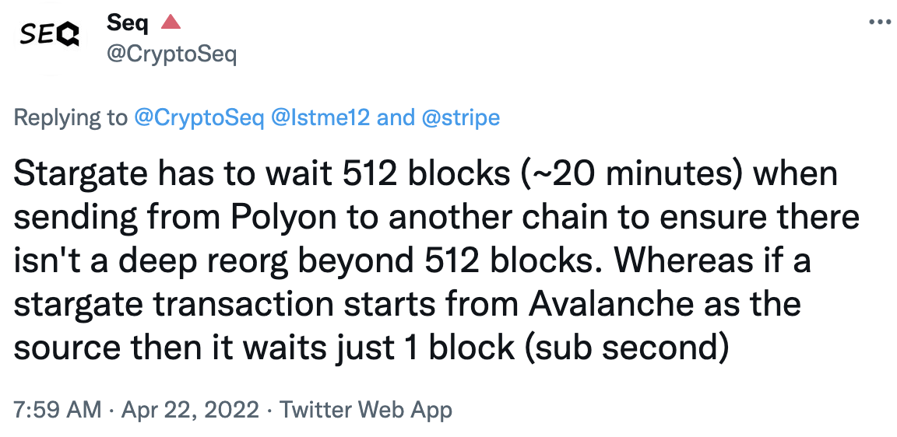
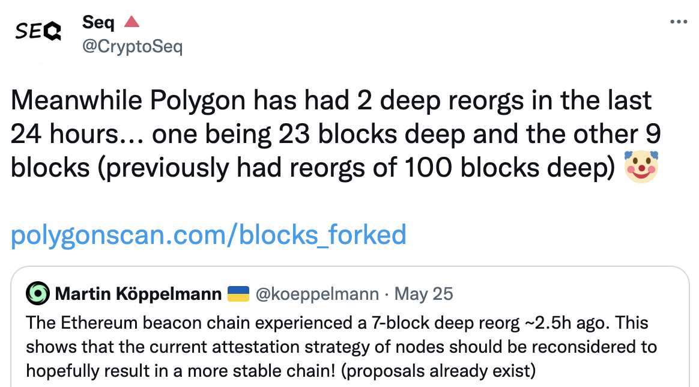

Avalanche Overview and Consensus
Who am I?
- Gyuho Lee (이규호)
- Protocol Engineer, Ava Labs
- github.com/gyuho
- twitter.com/gyuhox
- t.me/leegyuho (Telegram)
- linkedin.com/in/gyuho
Agenda
- What is Avalanche?
- Avalanche Consensus ☃️
- Avalanche Platform
What is Avalanche?
Overview
Avalanche ($AVAX)
- Mainnet launched in Sep 2020
- Supports EVM
- Novel Consensus Algorithm: Snowman
- Proof-of-Stake
- Fast and Scalable L1 (>2K EVM TPS)
- Reliable (no downtime, no reorg)
- Platform for deploying "Subnets"
Ava Labs
- Founded in 2020 by Emin Gün Sirer, ex-Cornell professor, the creator of the first p2p cryptocurrency system in 2003, and Cornell PhDs
Ava Labs builds products and infrastructure that streamline the user experience for web3.
Avalanche Today
>3.6B requests (a day, July 2022) with ~80ms latency


Avalanche Today
Subnet effect -- scales without congestion

Horizontal Scale with Subnets
- Consensus with sub-second finality (Fast)
- Decentralized with >1,300 validators (Secure)
- Subnets for application specific chains (Isolation)
Avalanche Consensus ☃️
Snowman Protocol
Consensus
"Assume a collection of processes that can propose values. A consensus algorithm ensures that a single one among the proposed values is chosen." Leslie Lamport, Paxos Made Simple (2001)
Should this transaction be placed in a block or not?
PoW or PoS is NOT a consensus mechanism!
Consensus Until Now
Classical (Lamport 1998, Paxos/Raft/etcd)
- Quick finality but does not scale
- Quadratic message complexity
- Permissioned, requires precise membership
Consensus Until Now
Nakamoto (Bitcoin 2008)
- Robust, no need for precise membership
- High latency, low throughput
- Wastes energy, not green, not sustainable
Consensus Until Now
PBFT (1999)
- Powers many PoS networks (Tendermint, Casper)
- Committee/leader-based
- Can't scale easily ("leader/coordinator" dilemma)
- Quorum-based: must know all participants
- Fast when membership is small
- Deterministic safety (100% safe)
- Hard limit on the Byzantine adversaries
- Many are very complicated
Avalanche Consensus Family
- Published in 2020
- Instant finality, low latency (~1 sec)
- High throughput (>1,500 TPS on EVM, 5K on X-chain)
- Scales >10-million nodes
- Robust, no need for precise membership
- Leaderless
- Quiescent, green, sustainable
- Inspired by epidemic protocols and gossip networks
- New idea: deliberately metastable
Avalanche Sustainability

Binary Consensus
- Pick one
red /blue -- no correct answer - Adopt the majority color by repeated sub-sampling
- Consensus results in the entire network agreeing on either
red orblue - Even with 50/50 split, random perturbation in the sampling results in a single value being selected

At the beginning, pick any color (no correct answer)
Radomly sub-sample the network

"Red" is the majority from the sample
Adopt the majority color, "red"

Repeat this random sampling in parallel, in all nodes
Repeated random sampling perturbs conflicting state

Sequence of metastable process of random sampling
All converge to the same value (agreement)

"The protocol is designed to tip" (YouTube)
Fast Finality
Avalanche == no block re-org, no longest chain rule
- Re-org in game? May lose item after tx revert
- Re-org in bridge? Must wait longer for source chain
- Re-org in payment? May lose money for goods
 
Avalanche Consensus FAQs
- What are "safety" and "liveness" parameters?
- What happens when there is no transaction conflict?
- What happens to conflicting transactions?
- What do you mean by "Quiescent Protocol"?
- Is Avalanche consensus leaderless?
Snowman++ (Proposer VM)
- Released in Sep 2021
- Single, designated (preferred) block proposer
- Reduce block proposer contention
- Avoid "useless" work
- Increase throughput, lower latency
- Consensus protocol itself is still "leaderless"
Frosty
- Best of both worlds: classical + Avalanche consensus
- Bost liveness without sacrificing the safety
Avalanche Platform
Platform Overview
Primary Network
- X-chain runs on DAG, used for exchanging assets
- P-chain coordinates validators and subnets
- C-chain executes EVM contracts with ETH RPCs
Subnet validator must validate primary network!
Getting started?
- https://avax.network
- avalanche-cli: Launch a subnet in 30-second
Welcome to Multiverse
Avalanche Foundation Launches Incentive Program to Accelerate Growth of Subnets